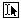

The Select Index window appears.
Document Security enables you to secure your indexes on document level, and allow access to certain groups of documents, based on a field query. Document Security is based on the meta information of the documents. First, document groups have to be created that contain users or user groups. To these created groups queries over the meta information of the index can then be added. Everone who is a member of a certain group is only allowed to view the documents that meet the defined search query. Document Security is effective only if field values are added during archiving.
There is of course an evident relation between document security and functional security. The actions that can be done on the documents are secured with functional security. So in case you allow a user group to search in certain document groups, the actions the user group can perform on the documents depend on the given functional security.
In order to use document security on indexes, the Document security module has to be selected when you create the index (step 2 of the Index wizard). Do not forget to define the fields; document security is based on them. For more information, see Create Document Security index (page 208).
You created a Document Security index and added fields. These fields enable Document Security. Add documents, fill out the field values, and build the index again. Now the index is ready for full-text searching.
The Document Security index may be added to an (Enterprise) Web Client. This will allow users to use Document Security via the web.
It is recommended that the TIMER Service is used to build the index automatically after changes to fields, thus ensuring that the index is always up-to-date. Installing the Timer as a service enables the Timer to run constantly in the background, building the index as changes are made (Automatic mode) or at a set time frequency (manual settings).
Note: You can only apply automatic mode when the selected index has quick-build enabled.
Note: As the Timer is run as a Windows Service, it continues to run in the background, even when ZyINDEX is closed.
Note: Automatic mode is only active when the selected index has quick-build enabled.
You can run the timer as a service either locally or in a domain. For a domain you must obtain the domain name, the user name, and the password. Make sure the defined user has full control on all index, data and temporary folders.
Click Install Service to install the service.
The Timer is set up. The service runs in the background and continuously updates an index (automatic mode) and/or starts the manually-selected actions on an index.
Note: It is recommended that the index receives a full build periodically (for example 1 time per day) to ensure all changes appear in the index. You can add this manually to ZyTIMER using the Add Index window and choosing the Add action.
Document groups can be selected in the indexes folder of the security tab. Indexes that are created with the Document Security module consists of three parts: Document groups, Document security and NTFS security. If you set permissions on, for example, the data folders, users will at least need to have read rights on the documents, otherwise they will not be able to see the documents, even if they are in the correct document group.
Before you can create Document Groups, ZyLAB users will have to be defined.
You have created an Index with the security module.
You created document groups.
To define subgroups, click  , select the groups you want to add, and click OK.
, select the groups you want to add, and click OK.
To change the name of a document group, select it, and click the "Change the name for this group" icon: . Change the name, and click OK.
To delete a document group, select it, and click the "Delete this group" icon:  . Click OK.
. Click OK.
The following syntax rules apply:
You can use the ? character in Document Security queries comparable to the ZyFIND usage as a wildcard operator to replace individual character positions in a value.
For instance a query on AA?AA will find documents that contain a AABAA
CONTAINS operator (default): a basic query value is matched against the document field value using the contains operator, for example:
cat matches cat, but also cats and dogs
EXACT MATCH operator “”: a query value within quotes is matched using the exact match operator, for example:
“cat” matches cat, but not cats or cats and dogs
NOT operator !: using the exclamation symbol boolean queries can be negated, for example:
!cat matches dogs, but not cat, cats or cats and dogs
Combination of EXACT MATCH and NOT operator, for example:
!”cat” matches dogs, cats and cats and dogs, but not cat
WILDCARD operator *: Wildcards used at beginning or the end of a word are interpreted as respectively "starts with" and "ends with". As a consequence *cat* has the same meaning as cat while *cat and cat* will in general generate less results than just cat (but more results than “cat”), for example:
Ams*dam
NOTE: Too many wildcards inside a value can give an unpredictable result. Do not use more than one wildcard operator inside a value (So Ams*dam and *ms*dam are valid conditions, but Am*st*dam is not).
AND and OR and precedence operators ( ): using AND and OR operators and brackets you can construct complex conditions, for example:
Amsterdam and !(Paris or Washington)
USER PROPERTY resolving: $ followed by the name of a user property will be replaced by the corresponding value of the current logged-on user. The user property may be enclosed by quotes to indicate an exact match condition, for example:
$COMPANY
$”DEPARTMENT” and !”Test Department”
USER GROUPS restriction #GROUPS: #GROUPS as a query value can be used for fields containing a comma separated list of ZyLAB groups and/or user account names. The user will be granted access to the document if the user is member of one of the listed groups/accounts in the document field, for example:
#GROUPS
NOTE: This value cannot be combined with other values.
You want to define which actions the members of a document group are allowed to perform on an index.
To select all actions with one click, select the first checkbox (next to Permission).
If, for certain users or groups, actions are blocked with functional security, it will not be possible to execute these actions.
You set the access masks for a document group.